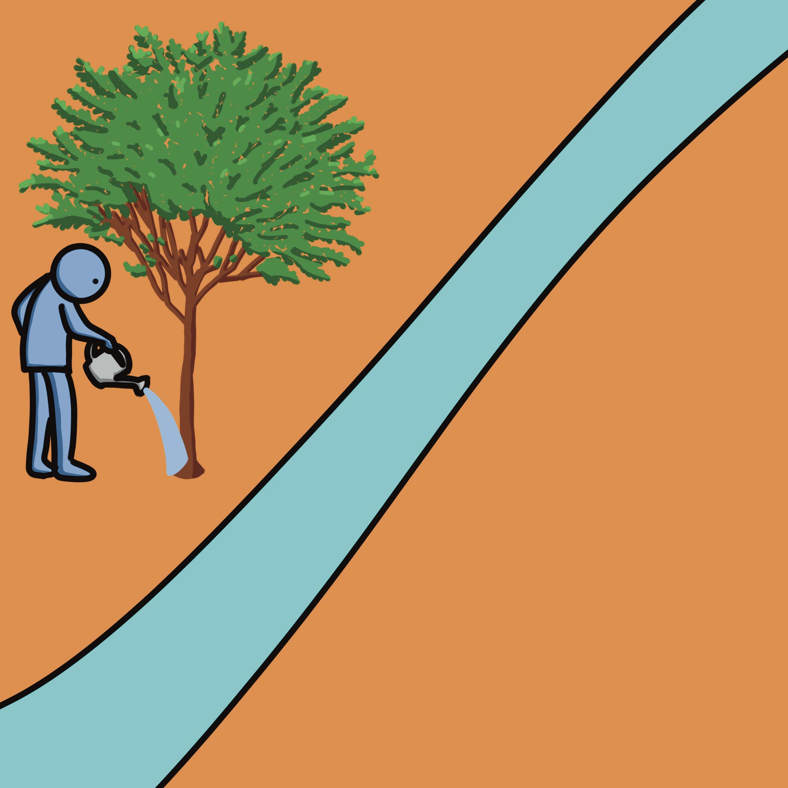
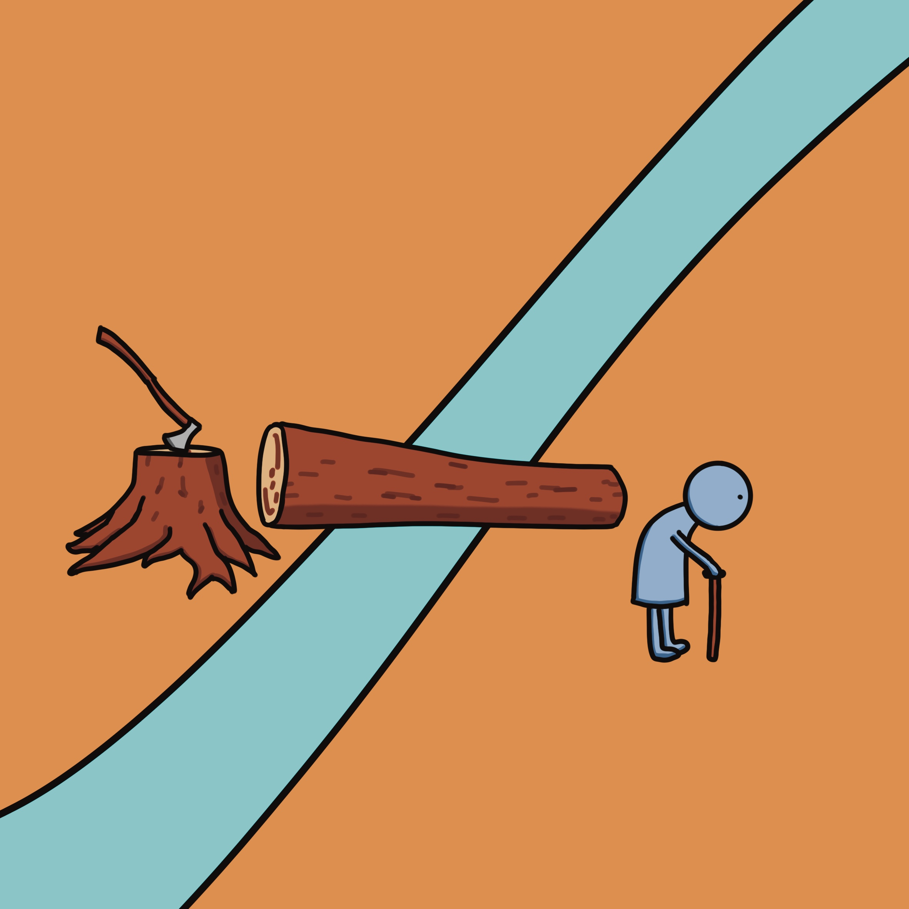
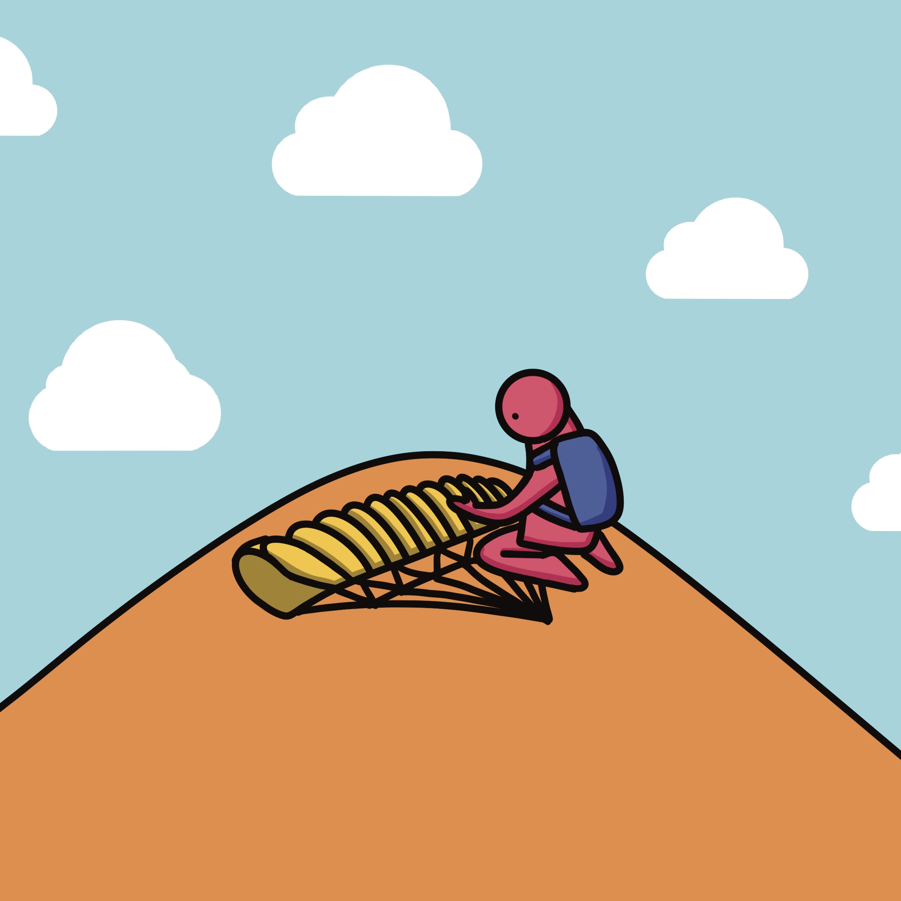
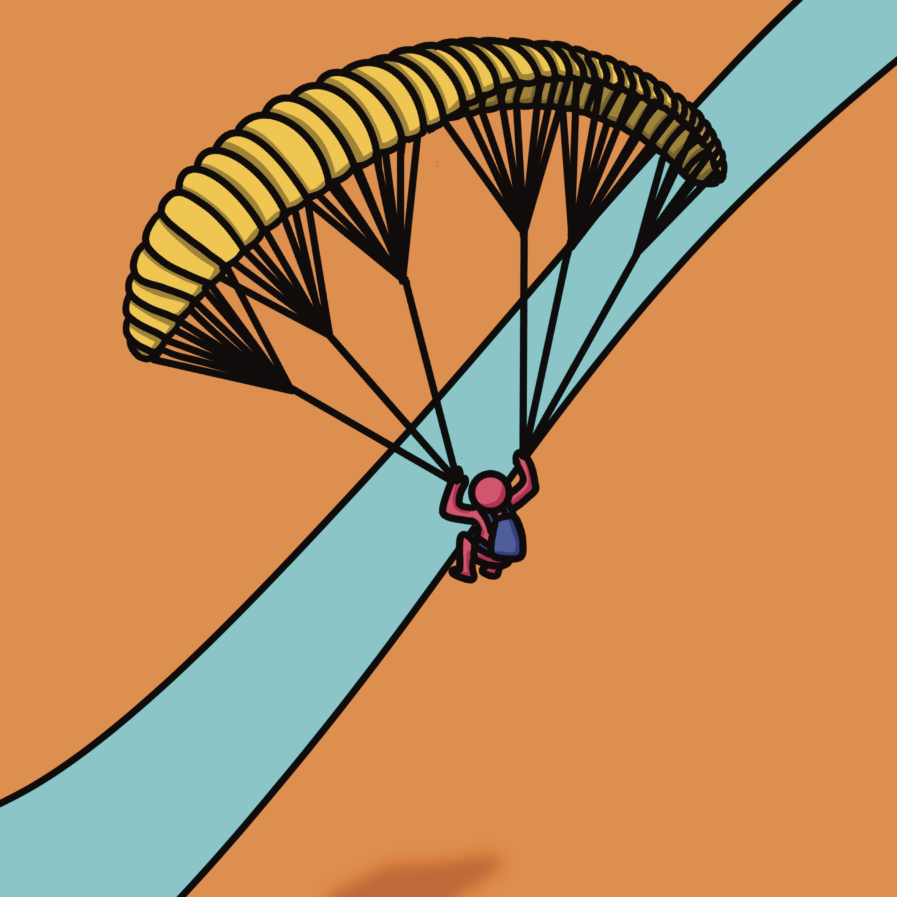

“How to Cross the River” is a children’s picture book about the many different ways people try to cross a river. In the story, they come up with all kinds of creative methods—because they’re afraid. They don’t know how deep or wide the river really is. But perhaps the river is actually very shallow and narrow. Maybe it’s so small that you could simply walk across it.
How to cross the river?
You can jump far to cross the river.
You can pole vault over the river.


You can plant a tree, wait for it to grow, and then knock it down.
You can speed up a hill in a car and jump over the river.
You can ride a magic carpet.
You can use a giant slingshot.
You can invent a teleportation machine.

